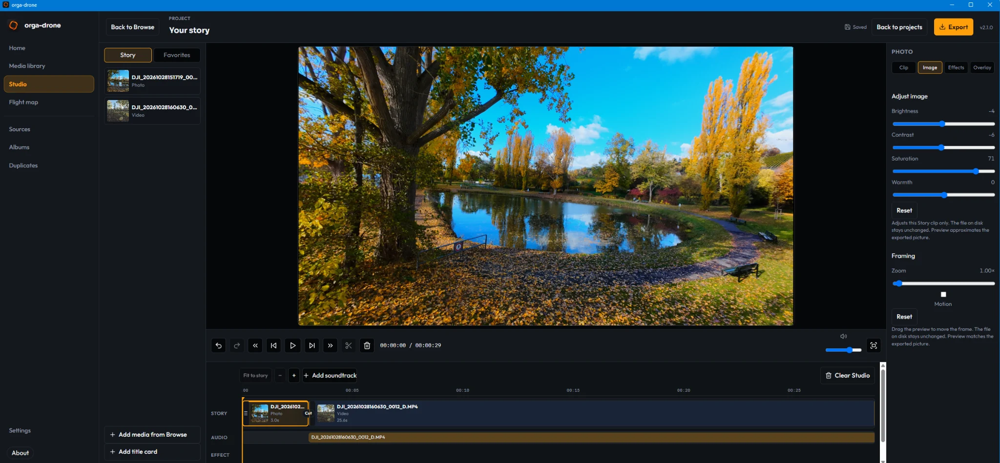
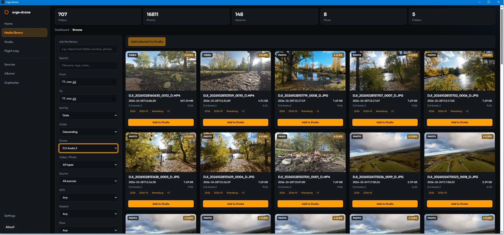
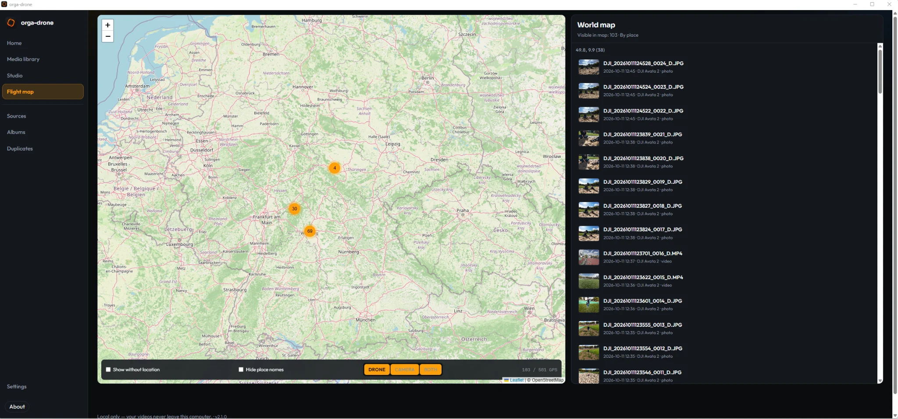
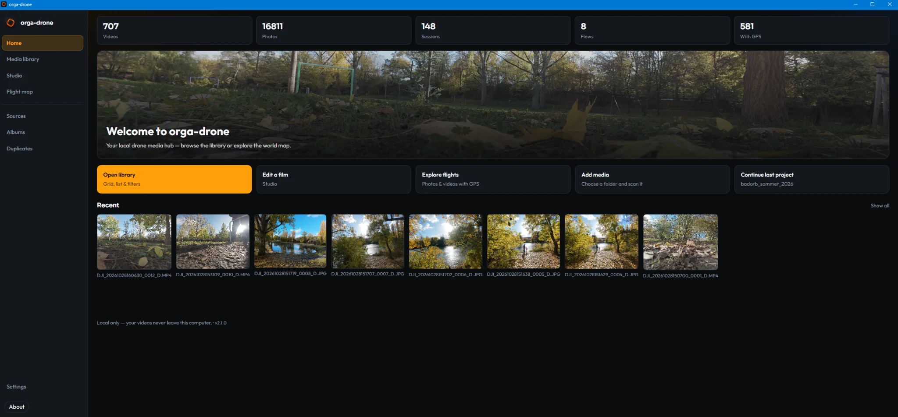

Media library
Organize and explore drone footage and photos in a dedicated desktop workspace.
From drone footage to finished stories. Browse photos and videos, explore flight locations, and edit locally in one Windows desktop app. No cloud required.
Your media stays on your machine. No subscription required.
Keep your footage and the context behind it together, without handing your media to another platform.
Organize and explore drone footage and photos in a dedicated desktop workspace.
Bring flight context and available telemetry alongside the media it belongs to.
Explore where your flights happened and reconnect footage with location.
Work with clips, visual adjustments and exports in a local editing workflow.
Real application captures from the desktop app — library, map exploration, studio and dashboard. No conceptual UI.





Watch the finished footage.
Watch on YouTube ↗
See the editing process and how the project comes together.
Watch the making-of ↗Orga Drone takes a local-first approach to managing drone media. Work on your own computer, keep control of your files, and explore the open-source project behind the app.
Explore the project, follow development or find the current distribution options.